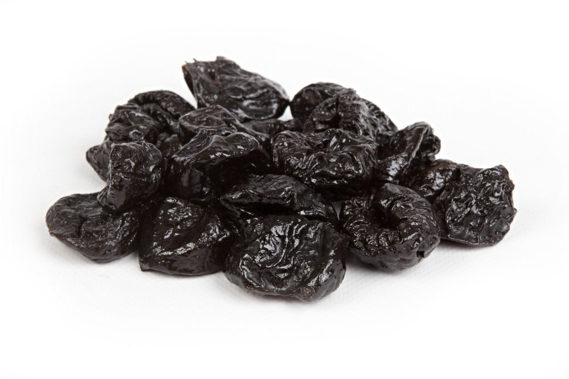

Свежый чирнаслиф!!!
 Наш чирнаслиф толко што высушыли.
Слива растет из Азербайджан. Патом сушым нэдэля и вах!
Очэн вкусный, такой сладкий, но сразу многа не еш, ото потом фсе слипнеца!
Но лутше бири многа, не пажилеещ
Очэн черний, сладкий и липкий. Стоит дёшева! Скитка сделаем. Многа витамин.
Кило стоит 500 рублей, можна 100 грам, тагда стоит 70 рублей.